Helping 99acres users narrow down localities in a city
During the summer of 2023, I interned at InfoEdge as a UX designer working on 99acres - India's largest property listing platform. I identified a problem statement and came up with possible solutions for it. I followed a tweaked double diamond process, with major emphasis on iteration.
The outcome was a section in the app where users can quickly see the localities of a city and narrow down their search based on smart insights.
Chapter 1: Discovering the brief
Early on the internship, I was tasked with going through the 99acres platform and identify points of improvements. One of these would have to be my problem statement for the internship.
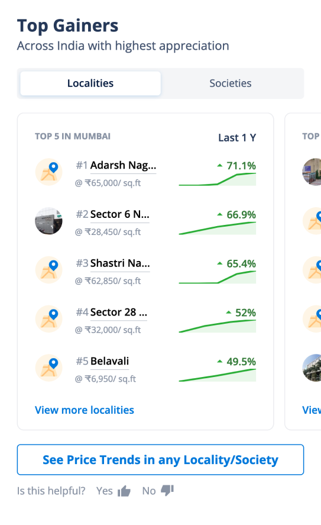
After Having gone through most of the important flows of the app, including searching a property, making a contact, listing properties, etc, I stumbled upon a section of the app that piqued my interest. The standalone section was titled "Insights" and contained all forms of locality and property based insights, such as historic prices, changes in prices, etc. To my surprise, this information was presented targeting investors and not regular buyers, difference between which let's be honest, is a very thin line.
Competitor analysis - a case of convergent evolution?
To understand how other platforms were using insights, I studied MagicBricks, Housing and Squareyards, along with
two international platforms. However, all three Indian platforms had very similar features and use of Insights.
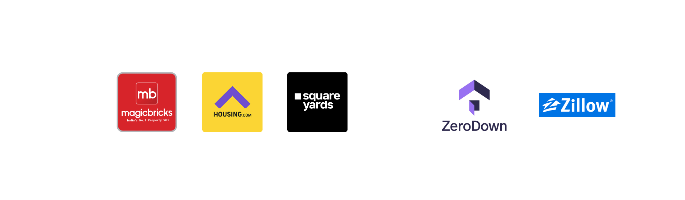
Some of the insights salvaged from the competitor analysis were,
- Zerodown has heat-maps of the city showing price, demography and services data.
- Zillow has a price confidence feature
- Housing and Squareyards use a map to enhance discoverability.
- Squareyards has high discoverability of insights, However their data is limited.
Digging deeper - interviewing home buyers
Having had a rather dissapointing competitor analysis, I moved on to implementing a UX method well known for it's outcomes -
User interviews. I conducted a total of 6 in-person interviews, each lasting around 25 minutes, with participants from the office
itself. They must have bought a house in last one year to qualify. Next I transcribed, coded and derived Insights from these interviews.
Chapter 2: Defining the Buyer's journey
Following were the insights derived from the user interviews conducted. This helped me confine my project scope to the search flow.
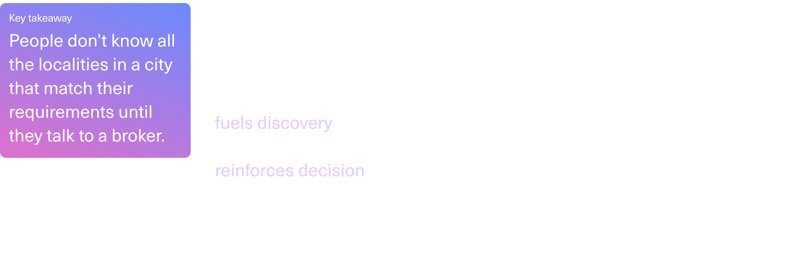
Interestingly, the buyer's journey can be mapped out on a double diamond framework. The journey ususally
lasts for 6 months to 1.5 years, with site visits ranging between 5 to 20.
The journey map was made for the archetype of a first time flat buyer.
This archetype was derived from the people interviewed and the target audience of 99acres.
Click Here for an in depth stage by stage journey map.
I brainstormed points of intervention for each stage of the buyer's journey.
Mapping those ideas on an effort vs impact graph and grouping ideas helped me redefine the brief one last time to,
Intervention - Discovery and narrowing down of new localities with the help of insights
Chapter 3: Generating ideas and identifying opportunities
From a list of top searches performed on the platform, I identified that 30% of searches were done at a city level. These had the potential to be converted to a locality level search with the help of insights.
The widgets wizard
Widgets are small information snippets that appear on the search result page in between the search results.
It was these widgets that were going to do most of the heavy lifiting in presenting insights for my feature.
I adopted rapid prototyping to quickly create several iterations of my designs and get validations from fellow designers.
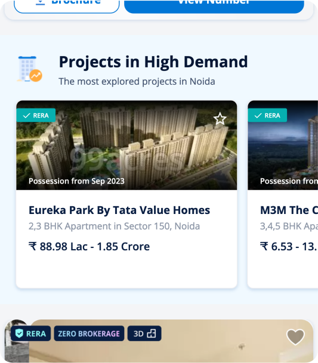
Chapter 4: Final designs and flows
Imagine this
You are a recent grad from college who just secured a new job! Everything is amazing
except for one thing, you will have to move to Noidaand you have never been to the
NCR. Finding a place in Noida will be a nightmare. Well, you log on to 99acres
and search for places in Noida.
The platform recognises a city wide search, and shows a banner on the top of the
page, nudging the user to take an action based upon the budget segment,
which is usually the fixed aspect of a house search.
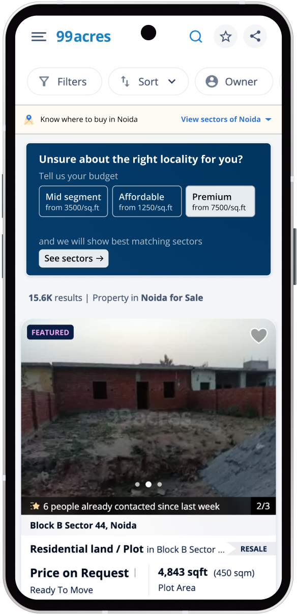
A small section opens up that shows you the number of options you have in each
locality (sector). You quickly swipe through different sectors, viewing the insights of each.
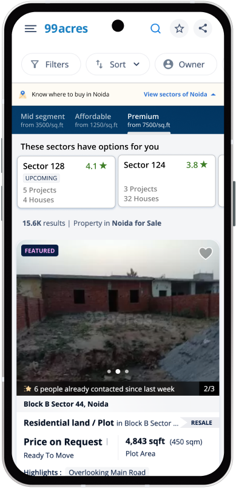
In the sector details, you can see quick snippets of the primary insights,
like amenities in the sector, as well as secondary insights, like positives
and negatives of the sector, AI generated from reviews.
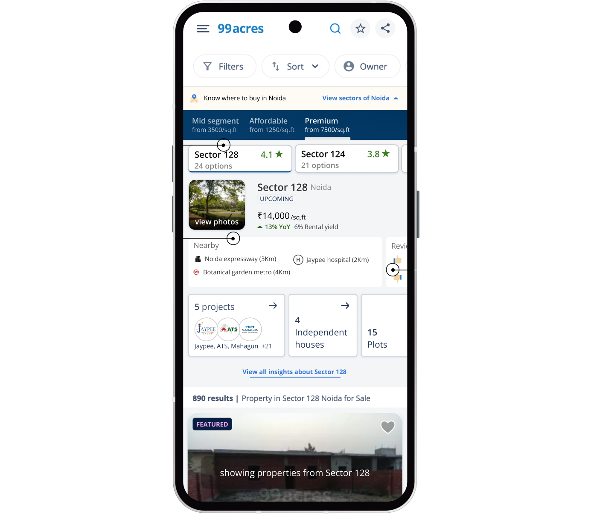
Finally, you select the option to view projects in Sector 128. The sector is nearby your office,
has good amenities and plenty of options, You get a side scrolling
list of projects in the sector.special highlights are given to projects that stand
out to reduce burden on making choice.
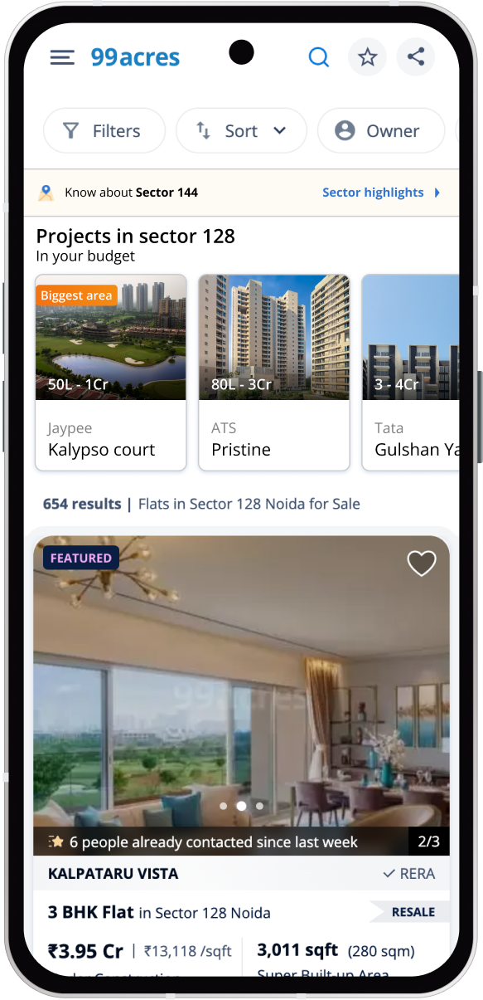
Selecting a project, you can see the insights related to the project present on the platform.
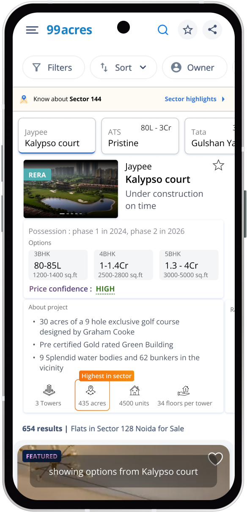
With this, you are able to quickly identify a few sectors that you should focus your
search in, as well as the projects present in them.
Some other interventions
A price Confidence indicator: To curb the problem of people not trusting prices on online
platforms, a price confidence can be introduced on both a single listing and project details page.
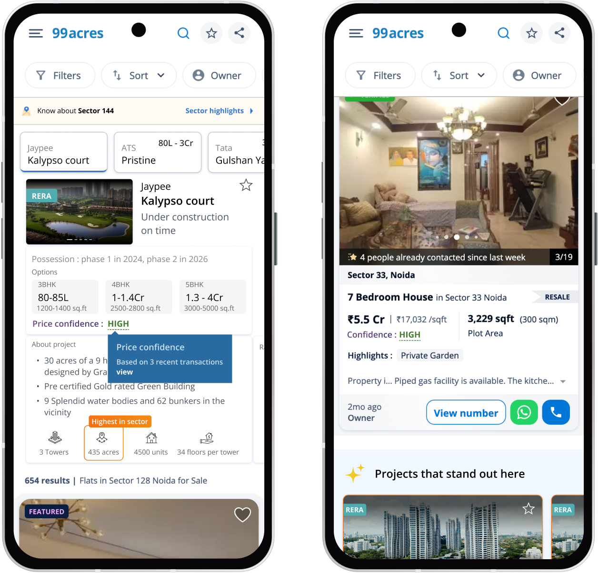
Insights on the no results page: Data from insights can be used to help a user
make smart searches in case of a no results page.
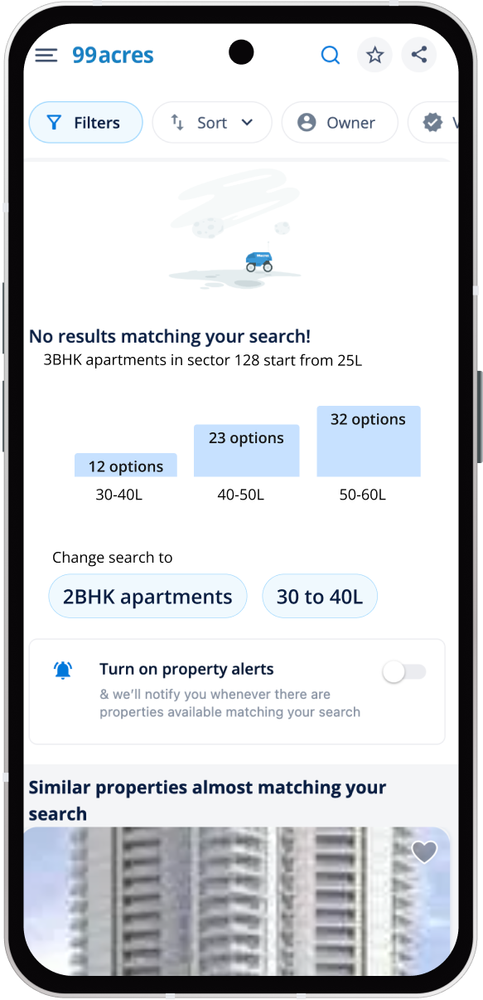
Projects that stand out: To reduce the overwhelming nature of the search results page,
this widget shows you projects that stand out, thus aiding decision making.
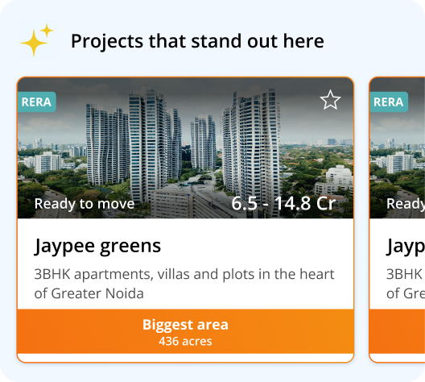
Dealer trust: The dealer card was redesigned to introduce review and rating system for
the dealers themselves. Also smaller changes were made to the information layout - like
showing number of years on platform instead of joining date.
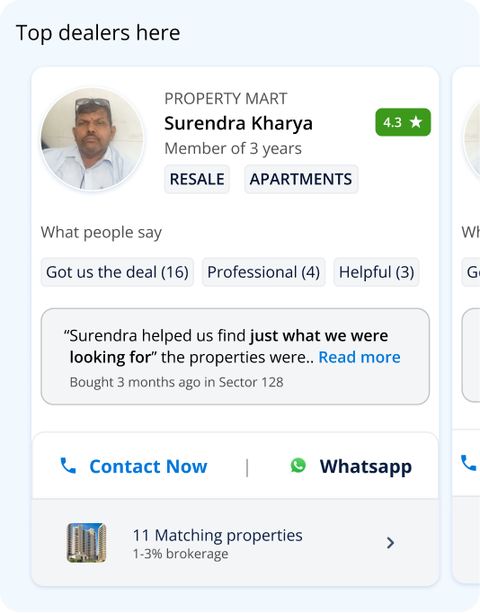
Trending sectors: Not only does it tell you how is a sector trending -
X new transactions But also why such a trend is there - news updates.
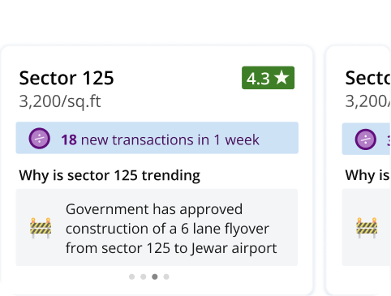
With this, ends the major scope of my explorations. Ultimately, I got to explore a
major flow, as well as multiple smaller interventions on the platform.
Chapter 5: Learnings, Future scope, and Other ideas
Some other ideas
• Landmark based search Travel time from a landmark based search, map based dicovery.
• A market based comparison Compare individual properties to the market in its entirety.
• Introduce social proof Forums, Prop-buddies, reviews and search trends to build social proof.
Learnings
Working in real world environment, I learned the importance of making decisions faster.
I was often stuck being a perfectionist spending time away for minimal returns. These
interventions are not being implemented at this stage. Given the time constraint,
I could not interact with product managers or developers. The project will be further
refined before implementation.
Thank You!
Confidentiality and Liability Notice:
This case study is shared under the terms of a Non-Disclosure Agreement (NDA) and is intended
solely for the recipient's review. By accessing this content, you agree to the following:
Confidentiality: The information contained in this case study is confidential and proprietary.
It is not to be shared, reproduced, or disseminated in any form without explicit written consent from the original disclosing party.
Liability: Any further distribution, sharing, or public disclosure of the contents of this
case study is solely the responsibility of the individual accessing it. The author of this
case study, or any affiliated parties, shall not be held liable for any unauthorized dissemination or use of this information.